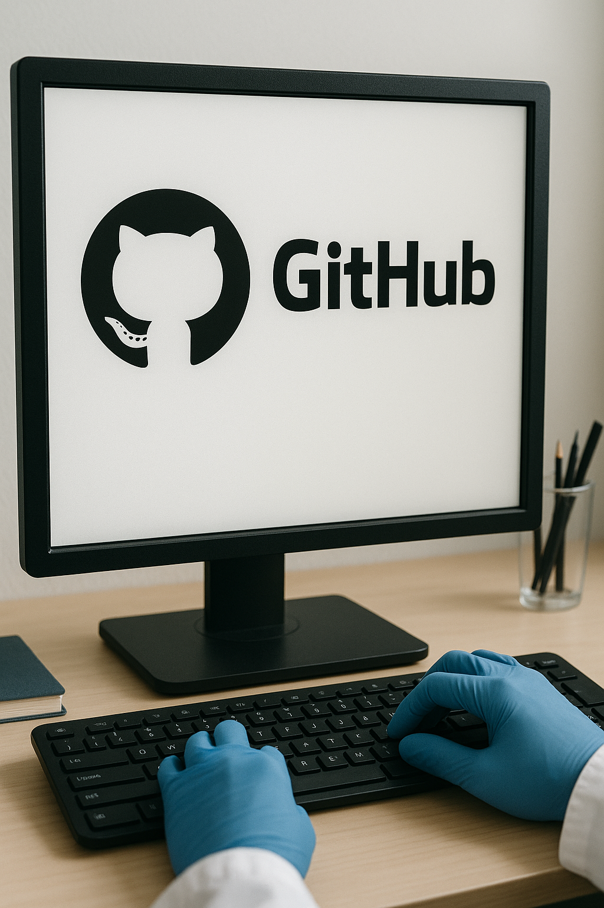

15 Git and GitHub

By the end of this lesson, you will be able to:
- Understand the basics of version control with Git
- Set up Git on your computer
- Create a GitHub account and repository
- Perform basic Git operations (clone, add, commit, push, pull)
- Understand branching and merging concepts
1 What is Version Control?
Version control is a system that records changes to files over time so that you can recall specific versions later. For data science projects, version control helps you:
- Track changes to your code and documents
- Collaborate with others without overwriting each other’s work
- Revert to previous versions if something goes wrong
- Document the evolution of your analysis
Git is a distributed version control system that tracks changes in any set of files. GitHub is a web-based platform that hosts Git repositories and adds collaboration features.
2 Why Use Git and GitHub?
For data scientists and researchers, Git and GitHub provide several benefits:
- History tracking: Document how your analysis evolved
- Collaboration: Work with others seamlessly
- Backup: Store your code securely in the cloud
- Reproducibility: Others can access and run your exact code
- Open science: Share your work with the broader community
3 Setting Up Git
3.1 Installing Git
First, you need to install Git on your computer:
- Windows: Download and install from git-scm.com
- Mac: Install via Homebrew with
brew install gitor download from git-scm.com - Linux: Use your package manager, e.g.,
sudo apt-get install git
3.2 Configuring Git
After installation, configure Git with your name and email:
git config --global user.name "Your Name"
git config --global user.email "your.email@example.com"4 Creating a GitHub Account
- Go to github.com
- Click “Sign up” and follow the instructions
- Choose a free plan to start
5 Git Basics
5.1 Key Concepts
- Repository (repo): A directory where Git tracks changes
- Commit: A snapshot of changes at a point in time
- Branch: A parallel version of the repository
- Remote: A version of the repository hosted elsewhere (e.g., on GitHub)
- Clone: Creating a local copy of a remote repository
- Push: Sending commits to a remote repository
- Pull: Getting changes from a remote repository
5.2 Creating a Repository
5.2.1 On GitHub:
- Log in to GitHub
- Click the “+” icon in the top-right corner
- Select “New repository”
- Enter a repository name and description
- Choose public or private
- Click “Create repository”
5.2.2 On Your Computer:
# Create a new directory
mkdir my-project
cd my-project
# Initialize Git repository
git init
# Connect to GitHub repository
git remote add origin https://github.com/yourusername/my-project.git5.3 Basic Git Workflow
The typical Git workflow involves these steps:
- Make changes to your files
- Stage the changes for commit
- Commit the changes with a message
- Push the changes to GitHub
# Check status of your repository
git status
# Stage changes
git add filename.R
# Stage all changes
git add .
# Commit changes
git commit -m "Add data cleaning script"
# Push to GitHub
git push origin main5.4 Cloning an Existing Repository
To work with an existing repository:
# Clone a repository
git clone https://github.com/username/repository.git
# Navigate into the repository
cd repository5.5 Pulling Changes
When working with others, you’ll need to get their changes:
# Get latest changes
git pull origin main6 Branching and Merging
Branches allow you to work on different features or experiments without affecting the main codebase.
6.1 Creating and Using Branches
# Create a new branch
git branch feature-analysis
# Switch to the branch
git checkout feature-analysis
# Create and switch in one command
git checkout -b new-feature
# List all branches
git branch6.2 Merging Branches
Once you’re satisfied with your changes:
# Switch back to main branch
git checkout main
# Merge your feature branch
git merge feature-analysis
# Push the merged changes
git push origin main7 Using GitHub for Collaboration
GitHub enhances Git with collaboration features:
7.1 Pull Requests
Pull requests (PRs) let you propose changes to a repository:
- Fork a repository to your GitHub account
- Clone your fork locally
- Create a branch and make changes
- Push your branch to your fork
- Create a pull request to the original repository
7.2 Issues
GitHub Issues help track tasks, enhancements, and bugs:
- Create detailed issue descriptions
- Assign issues to team members
- Label issues by type
- Reference issues in commits and pull requests
8 Git and RStudio Integration
RStudio provides a user-friendly interface for Git operations:
- Create a new project with version control
- Use the Git pane to stage, commit, and push changes
- View file differences and history
9 Best Practices for Data Science Projects
- Commit often: Make small, focused commits
- Write clear commit messages: Explain what and why, not how
- Use .gitignore: Exclude large data files, outputs, and sensitive information
- Structure your repository: Follow a consistent organization pattern
- Document your workflow: Include a README with setup instructions
10 Practice Exercises
10.1 Git Setup
Create a GitHub account (if you don’t have one) and set up Git on your computer.
Creating a GitHub Account:
- Go to github.com
- Click “Sign up” in the top-right corner
- Follow the prompts to create your account:
- Enter your email address
- Create a password
- Choose a username (this will be your GitHub identity)
- Verify your account (usually by solving a puzzle)
- Choose your plan (the free plan is sufficient for most users)
Setting Up Git on Your Computer:
For Windows:
# After installing Git from git-scm.com
# Open Git Bash or Command Prompt and configure your identity
git config --global user.name "Your Name"
git config --global user.email "your.email@example.com"
# Verify the configuration
git config --listFor Mac:
# Install Git via Homebrew if not already installed
brew install git
# Configure your identity
git config --global user.name "Your Name"
git config --global user.email "your.email@example.com"
# Verify the configuration
git config --listFor Linux:
# Install Git via package manager
sudo apt-get update
sudo apt-get install git # For Debian/Ubuntu
# OR
sudo yum install git # For RHEL/CentOS
# Configure your identity
git config --global user.name "Your Name"
git config --global user.email "your.email@example.com"
# Verify the configuration
git config --listOptional: Set Up SSH Key for Secure Authentication:
# Generate SSH key
ssh-keygen -t ed25519 -C "your.email@example.com"
# Start the SSH agent
eval "$(ssh-agent -s)"
# Add your SSH key to the agent
ssh-add ~/.ssh/id_ed25519
# Copy the public key to clipboard (use appropriate command for your OS)
# Then add it to your GitHub account in Settings > SSH and GPG keysOnce you’ve completed these steps, you’ll have a GitHub account and Git configured on your computer, ready for version control.
10.2 Repository Creation
Create a new repository on GitHub and clone it to your computer. Add a simple R script, commit it, and push it to GitHub.
Creating a New Repository on GitHub:
- Log in to GitHub
- Click the “+” icon in the top-right corner
- Select “New repository”
- Fill in the repository details:
- Repository name: “my-first-r-project”
- Description: “A repository for learning Git with R”
- Make it public or private
- Initialize with a README
- Click “Create repository”
Cloning the Repository to Your Computer:
# Navigate to the directory where you want to store your project
cd ~/Documents/Projects
# Clone the repository
git clone https://github.com/your-username/my-first-r-project.git
# Navigate into the repository
cd my-first-r-projectCreating a Simple R Script:
Create a file named simple_analysis.R with the following content:
# A simple R script for demonstration
# Load a built-in dataset
data(iris)
# Display summary statistics
summary(iris)
# Create a simple plot
plot(iris$Sepal.Length, iris$Sepal.Width,
main = "Sepal Dimensions in Iris Dataset",
xlab = "Sepal Length (cm)",
ylab = "Sepal Width (cm)",
col = as.numeric(iris$Species),
pch = 19)
# Add a legend
legend("topright",
legend = levels(iris$Species),
col = 1:3,
pch = 19,
title = "Species")
# Calculate mean values by species
aggregate(iris[, 1:4], by = list(Species = iris$Species), FUN = mean)Committing and Pushing the Script:
# Check the status of your repository
git status
# Add the R script to the staging area
git add simple_analysis.R
# Commit the changes with a descriptive message
git commit -m "Add simple iris dataset analysis script"
# Push the changes to GitHub
git push origin mainAfter completing these steps: 1. You’ve created a new repository on GitHub 2. Cloned it to your local machine 3. Added a simple R script that analyzes the iris dataset 4. Committed the changes with a descriptive message 5. Pushed the changes back to GitHub
You can now view your repository on GitHub and see the R script you added.
10.3 Open Source Contribution
Fork an existing R project on GitHub, make a small improvement, and create a pull request.
Forking an Existing R Project:
Find an R project on GitHub that interests you. For this example, let’s use a hypothetical project called “simple-r-examples” at
https://github.com/original-owner/simple-r-examplesClick the “Fork” button in the top-right corner of the repository page
This creates a copy of the repository in your GitHub account
Cloning Your Fork to Your Computer:
# Clone your fork to your local machine
git clone https://github.com/your-username/simple-r-examples.git
# Navigate into the repository
cd simple-r-examples
# Add the original repository as a remote called "upstream"
git remote add upstream https://github.com/original-owner/simple-r-examples.gitMaking a Small Improvement:
Let’s say you found a script called data_cleaning.R with a function that could use better documentation:
# Original function
clean_data <- function(df) {
# Remove NA values
df <- na.omit(df)
# Remove duplicates
df <- unique(df)
return(df)
}You could improve it like this:
#' Clean a data frame by removing missing values and duplicates
#'
#' This function takes a data frame and performs basic cleaning operations
#' including removal of NA values and duplicate rows.
#'
#' @param df A data frame to be cleaned
#' @return A cleaned data frame with no NA values or duplicate rows
#' @examples
#' df <- data.frame(x = c(1, 2, 2, NA, 3), y = c("a", "b", "b", "c", "d"))
#' clean_data(df)
clean_data <- function(df) {
# Check input
if (!is.data.frame(df)) {
stop("Input must be a data frame")
}
# Remove NA values
df <- na.omit(df)
# Remove duplicates
df <- unique(df)
return(df)
}Creating a Branch for Your Changes:
# Create a new branch for your changes
git checkout -b improve-documentation
# Edit the file with your improvements
# (Use your favorite text editor or IDE)
# Check what you've changed
git diff
# Add the modified file to staging
git add data_cleaning.R
# Commit your changes
git commit -m "Improve documentation for clean_data function"
# Push your branch to your fork
git push origin improve-documentationCreating a Pull Request:
- Go to your fork on GitHub
- You should see a prompt to “Compare & pull request” for your recently pushed branch
- Click the button
- Fill in the pull request details:
- Title: “Improve documentation for clean_data function”
- Description: “Added roxygen-style documentation to the clean_data function, including parameter descriptions and an example. Also added input validation to check that the input is a data frame.”
- Click “Create pull request”
The maintainers of the original repository will now be notified of your pull request. They can review your changes, request modifications if needed, and eventually merge your improvements into the main project.
Best Practices for Pull Requests: - Keep changes focused and small - Follow the project’s coding style and conventions - Include tests if appropriate - Be responsive to feedback from maintainers - Be patient, as maintainers may be busy